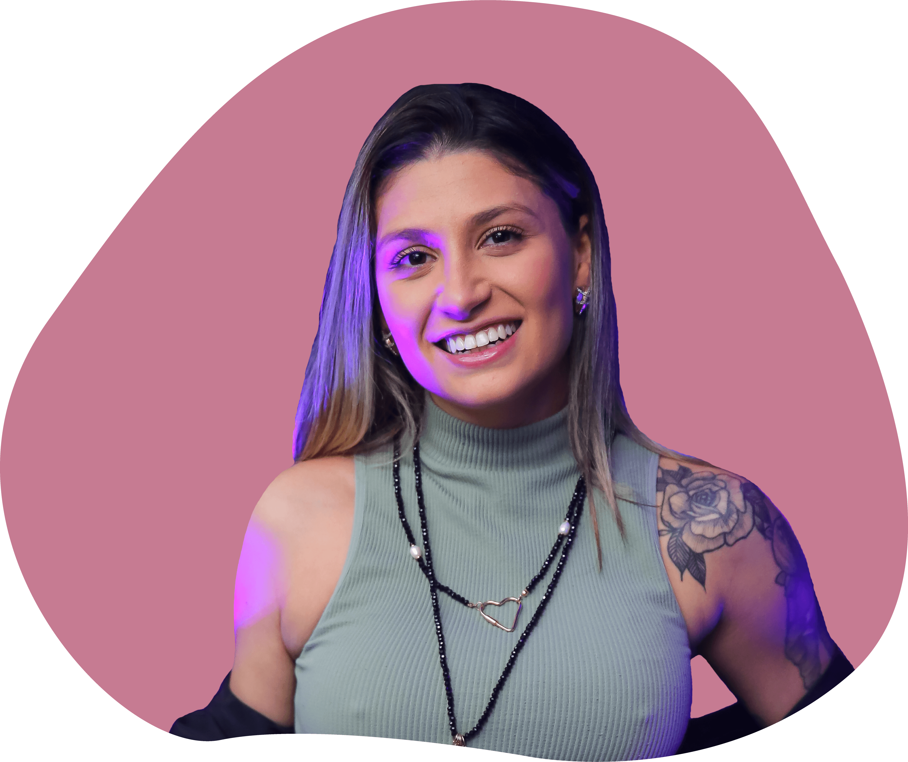

Hey, stalker!
Então você quer saber mais sobre mim?
Me chamo Marina Moll Chemale, libriana nata de 22 anos, nascida em Porto Alegre - RS. Desde pequena, sou apaixonada por arte, adorava passar o tempo desenhando e sempre disse que seria arquiteta. Com 17 anos, ingressei na faculdade de Arquitetura e Urbanismo e, em apenas um semestre, descobri que aquela profissão não era o que gostaria de fazer da minha vida. Em um teste vocacional, entendi do que se tratava a faculdade de Design e Comunicação Visual, e foi ali onde me apaixonei por esse curso.
Ver o brilho no olhar dos meus primeiros clientes recebendo a identidade visual de suas marcas, dando vida, cor e formato aos seus sonhos foi o que inicialmente me encantou na minha trajetória dentro do design. E foi dentro do meu primeiro estágio onde entendi a importância de um bom marketing, de um posicionameto forte nas redes sociais e também sobre o retorno de campanhas bem planejadas. Até esse momento, eu acreditava que estava completa com o que desejava fazer da minha vida profissional.
Foi na cadeira de Projeto IV - Inovação Social da faculdade de design, que realizei no segundo semestre de 2021, onde conheci um mundo novo e apaixonante. O projeto dessa cadeira era criar um aplicativo mobile, utilizando o Adobe XD. Foi a minha primeira experiência nessa área, e, depois de finalizar o projeto, nada conseguia calar a minha curiosidade sobre o assunto e vontade de aprender ainda mais. Em 2022 eu dei meus primeiros passos para descobrir esse novo mundo. Estou matriculada na escola de tecnologia Alura, na qual iniciei meus estudos pela formação de Front-End e pretendo colecionar diversos certificados.
Minhas Habilidades
Experiências
-
Conquistas
Em 2020 tive a honra de concorrer ao Prêmio Bornancini de Design, uma premiação com realização bienal que busca reconhecer os melhores projetos dentre várias categorias do design. Meu projeto acadêmico "Tropicália - Entendeu ou quer que desenhe?" foi indicado dentro da categoria de Design Editorial. O projeto é um livro que conta a história da Tropicália de forma dinâmica e com muitas de ilustrações, fazendo alusão a um disco de vinil, mostrando com muitas cores e elementos tropicais no lado A todas as conquistas musicais e culturais da época, e no lado B em cores escuras contextualizando o momento histórico e político da Ditadura Militar.
-
Empresas
Integrei o setor de marketing de duas empresas diferentes, a DOC9 e a AC Digital, onde, além de desenvolver diversos conhecimentos da área, também tive a experiência de trabalhar em equipe, realizar reuniões e trocas diárias com outros setores. Dentro de minhas atribuições, eu fui responsável pela comunicação com a rede de clientes, por gerenciar as mídias sociais, criar posts, materiais institucionais e materiais educativos para os clientes. Trabalhei diretamente com projetos de endomarketing, visando proporcionar uma maior conexão entre os colaboradores e as empresa, criando juntamente ao setor de Gestão de Pessoas campanhas inesquecíveis.
-
Freelance
Atualmente, posso citar mais de 10 empresas que foram lançadas no mercado de trabalho com uma identidade visual criada por mim. Além dos projetos de branding, analisando as tendências de marca para cada caso, também criei os posts iniciais e desenvolvi as legendas para que os clientes pudessem apresentar seus serviços nas redes sociais, alinhando o design visual e estratégias de marketing. Dentro da minha cartela de clientes, posso citar empresas do ramo da moda, gastronomia, educação física e medicina. Meu maior orgulho é ver a felicidade e satisfação ao entregar um projeto de branding para dar vida aos sonhos dos meus clientes e lançar uma nova marca no mundo.